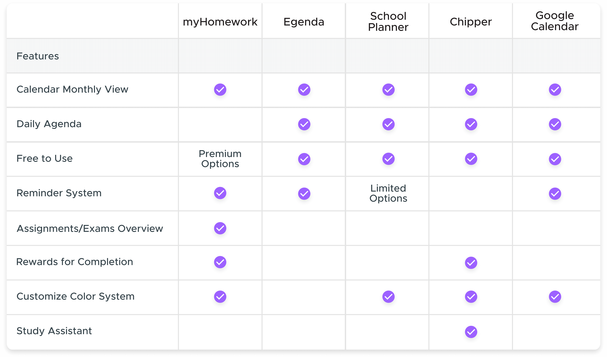

Project: Planit Mobile Concept and Prototype
Role: Research, Interaction, UI
Duration: January - March 2020 (3 Months)
Overview
PlanIt is an iOS mobile application targeted at students who do not traditionally use planners or traditional methods to stay on top of their tasks and assignments. PlanIt focuses around three main challenges, helping students achieve their academic goals, encourage and simplify the process of staying organized, and reducing stress of staying on track. This was a project created for a class.
Challenges
- Encourage and simplify the process of staying organized
- Help students achieve their academic goals
- Reduce stress of staying on track

The Project
For my senior project class I worked alongside 3 other team members, Derek Duty, Ralston Fitler, and Iegor Gutyria on the PlanIt student planner and assistant app. As students ourselves nearing the end of our college careers we have an understanding of the importance of keeping on top of your work. We understand the difficulties and attitudes often associated with incoming freshmen and wanted to target an app at benefiting and assisting others in a position that we once were in. The app was designed using the Goal-Directed Design Process to allow for a solid foundation in research to get a better understanding of our potential users before establishing concrete solutions to design and be tested.
Goal-Directed Design starts with a research phase to establish an understanding of the potential domain, competitive technologies, and user goals and behaviors. This research allows designers to model a persona as a means of synthesizing their data to assist with creating a solution that matches user expectations, behaviors, and goals. Having a better understanding of what the user looks like means that establishing requirements for the app are more targeted at users while aligning with business goals versus requirements than purely based on assumptions. These requirements define what the app aims to accomplish and help the user complete and turns into the design via wireframing of what the actual app will look and behave like before being tested with a variety of usability testing methods.
Research
The research stage within Goal-Directed Design is a process used to establish the groundwork for creating our application as it details expectations, information on the domain and current technologies, and ultimately user goals. The research stage involves a kickoff meeting to discuss plans and timeline, a lit review to survey the domain, a competitive audit to explore existing technologies, and user interviews to discover user goals and behaviors. The purpose is to ensure that the final product reflects the user goals while bridging the gap of business needs and goals.
Targeted Information
- Establish business needs and goals
- Become more informed on the domain
- Explore current technologies and views
- Understand our users’ behaviors and goals

Lit Review
A lit review was completed to gather information on the potential domain. We wanted to gather empirical data revolving around students, planning for tasks and its benefits, data on students who plan versus those who do not, and benefits of gamification as a motivator. This data was used to better inform us on the domain to give insight when we moved onto the interview stage. Although I was not directly involved in this area I still contributed by suggesting topics to research and discussed the findings with my team to have a better understanding of the domain.
The findings centered around the concepts of the actual benefits of short term planning and encouragement by gamification within a school setting. We wanted to be certain that we were heading in the right direction of encouraging those who do not use planners that there is empirical evidence to demonstrate a benefit. We also wanted to consider more ways to encourage students beyond simply automating their school life. We landed on findings revolving around students benefiting from gamification as a means of encouraging them to do better. his information gave us insight into tools and tactics used to help better students lives. The most interesting concept was the idea of adding features to encourage students to succeed in the form of games or competition. This was not something we had considered before as a motivator beyond automation and ease of use.
Competitive Audit
A competitive audit was conducted to examine existing technologies and the user views of them. This area was my main focus and job during this phase of the research along with my team memeber, Derek. Although I did give suggestions for what to look for during the lit review and thoughts on data discovered. My main focus was on discovering current offerings and user views on said offerings to establish what was possible and what people were interested in. We utilized both the Apple App Store and Google Play Store to examine the top current offerings. We primarily examined planner apps but also looked into technologies that automate input of information such as tax tools. This information helped inform us what options are possible and what aspects users liked and disliked. Although this information proved extremely insightful as to what information to look for in the user interviews and what was currently possible with technologies, it did not establish what specifically our app would look like as we wanted to be certain that our solution focused on or user goals.
User Interviews
In order to properly understand who our users are and what their goals are we conducted user interviews. We explored information such as what context the application would fit into their lives, their goals and motivations, their mental models, and problems and frustrations within the domain of college and planning or preparing for their day to day life. To achieve this knowledge we first created a persona hypothesis to think about what our user might look like in terms of what type of people might use our application, how their needs and behaviors might vary, and what behaviors and environments might need to be explored. The persona hypothesis acts as a means to create discussion and get us on track for moving into interviews. It is the first step in allowing us to identify and synthesize the persona which is the step after research.
To ensure we had an insightful interview we had one moderator who focused on having a conversation while there were three facilitators who made notes and asked the participant to clarify points or speak more deeply about comments that came up in the discussion. I took the position as a facilitator for these interviews. It was my role to ensure that any important details that were mentioned by the participant were noted and explored. I would ask them to expand on any topics they mentioned that might help us better understand who they are and what their goals are. I would also have them clarify any points of interest that were not clear from their answers.

The Interviews
In total we interviewed eight participants which were used to establish our persona once mapped and synthesized to create an application according to their goals in context of their life. We did this by individually synthesizing our thoughts after each interview and coming together to discuss findings by establishing patterns of behaviors. These patterns were used to map the participants into groupings. The group which included students not using planners became our primary user and those who were already using planners or other means of being proactive became the secondary persona.

The Personas
A persona is used to represent the synthesized data of users interviewed. These participants are mapped together where patterns exist. As a means of easily digesting this information personas are created to take the major components of the various participants where patterns emerge. We established two personas, the first is our primary user who does not use a planner or proactive manner to stay on top of their coursework and the secondary user is one who already utilizes a planner or other means of keeping track of their coursework. The secondary is a more proactive and studious person who already utilizes physical planners and materials to stay on top of their tasks.
Alan Stevenson
|
Primary Persona

“I want to quickly and easily get through college so I can begin my career”
- Age: 21
- Title: Full Time Student
- Job: Retail
Goals
- Complete his assignments
- Be prepared for exams
- Enjoy his personal life
- Graduate college
Bio
Alan is a full time student and also works a part time retail job. His main focus is graduating from college so he can begin his career. He relies primarily on his own memory to keep up with assignments and exams but often finds himself completing them right before they are due.
He greatly enjoys utilizing technology, however it is primarily for leisure and communication. His phone is his primary access point but he does utilize his laptop when applicable to access the university’s online portal. He uses the portal to view assignments and class syllabi.
Alan utilizes a mix of solo and group studying techniques to get through school. He does his best to balance studying in a way that he includes breaks to help motivate him to get through a study session.
Behaviors
- Puts things off to the last minute
- Focus on personal life over school
- Constantly balancing school and work life
Maria Louis
|
Secondary Persona

“I want to learn as much as possible in college to prepare me for my career”
- Age: 22
- Title: Full Time Student
- Job: None
Goals
- Get As in her classes
- Get a solid education
- Graduate college
Bio
Maria is a full time student. Her main focus is doing well in school and setting herself up to succeed in her future career. She utilizes a variety of traditional tools to keep up with all her classes and activities. She has a calendar hung up in her room and a always carries her planner.
She uses technology fairly frequently but she would not consider herself very tech savy. She primarily uses her phone for social media and connecting with others and her laptop for school work.
Maria will print out all her material for her classes such as her sylabus and any other information that she will need to refer to throughout the semester. She primarily studies in a solo setting but often volunteers to help other students who are struggling with a subject.
Behaviors
- Puts everything in writing
- Uses a physical planner for reminders
- Constantly preparing for exams and classes
The Requirements
Once we understood what our users looked like and determined what their goals and behaviors were we began to discuss the requirements of the app. We did this by constructing context scenarios in which our users would use our product such as the environment, amount of time, and potential distractions. This helped us put ourselves into their shoes for the day and consider all the various ways the app might be used. By considering these contexts we discussed and came up with a number of requirements. These requirements are not specific features or layouts within the product but rather what the app will do at a higher level. We established roughly twenty total requirements for the app.
Primary Requirements
- Easy access to information for the day
- Balance time/keep on track
- Help stay organized
- Make life easier/automate aspects of life
- Prepare them for school week
The Framework
Once we established the research on the domain and technologies, understood our users and their goals, and determined the requirements we were able to begin discussing the wireframe and design. I took lead and discussed with my team as I whiteboarded wireframe designs. We did this to determine what the main user flow would be as well as secondary flows. We wanted to think about how a user would use and navigate the application. This conversation was very fruitful in fleshing out the overall layout and flow of the app. Having various points of view created good conversation and consideration as to what the layout and flow might look like as we moved into prototyping. To better understand our initial wireframes and thoughts I further fleshed out the screens and flows discussed as a team.

Low Fidelity
A low fidelity paper prototype was created in order to do an early round of usability testing. It was decided to create a paper prototype as to quickly create a design that could be interacted with while also allowing discussion of flows with the user. This early test was crucial to verifying our flows and concepts before moving too far into a design. We were able to address a number of concerns that were a cause of confusion for the users. We had a moderator, Derek, give the instructions and questions to the user while I was in charge of placing the new screens as the user interacted with the prototype. We utilized a set of usability questions that had the user go through a number of scenarios to allow the user to fully interact with the prototype. The think aloud protocol was used to get a better idea as to what the user was thinking as they made their decisions when interacting with the prototype by having them speak what they were thinking and doing as they navigated the prototype.
Ultimately this prototype was used to verify and adjust our established user flows while verifying functions. We discovered certain flows had additional interactions that were either unclear or unnecessary. We also established secondary interactions that the users expected versus our intended interactions. The information my team members recorded during the session was extremely helpful in guiding our directions to focus on our users as we moved into a digital prototype.

High Fidelity
Once we established our primary flows we moved into Figma to create a medium fidelity and eventually a high fidelity prototype testing along the way. We utilized the same style usability tests as for the low fidelity only with the addition of a System Usability Scale which scores the usability of a product based on user rating questions relating to their interaction from one to five. We used these testing sessions to verify our choices made and tweak areas of confusion or change the flow to better suit our users’ expectations.
The primary area of focus revolved around the study session flows. We wanted to create an automated way of allowing the users to focus on their tasks with intermittent breaks. Our initial focus involved a lot of variables to allow the timer to focus on the specific classes with them all listed out for the session. We had also included a series of buttons on the homepage that were intended to corresponding to the specific tasks for the day that proved confusing to the users. We initially sought to fix this interaction but ultimately pivoted to a more simplified timer system that better matched our user needs and expectations.
Other areas of this testing focused on smaller features and interactions to ensure that both the product worked and matched our user expectations. We did a total of three rounds of high fidelity testing to ensure all the small details of the application were worked out.


Stay Organized
Our primary focus was on allowing students to stay organized and on top of their tasks. We wanted to make the experience and interaction with tracking tasks as simple and streamlined as possible. There are inherent barriers to using physical planners that we sought to overcome. We wanted to create a flexible experience to automatically display information that students already have access to on their syllabuses by automatically importing this data. We also wanted to allow users to easily track what they have going on for the day and mark tasks complete to ensure they are on top of their work. We focused on a daily overview to more easily allow the users to digest the information.
Achieve Goals
We wanted to ensure that our app focused around helping students get through college. We sought to implement gamification in the form of a tracker under the profile page, however further gamification with this feature would need to be implemented to fully assist and encourage the users. We added secondary features that allow users to both study flash cards according to their classes as well as the ability to set a timer utilizing the Pomodoro Technique to better make use of their time. We also wanted this study time to be flexible and fit around the users' busy lives. Ultimately we want our users to be prepared for their classes and pass their exams, assignments, and quizzes and implemented features target at all categories.

Reduce Stress
We explored the concept of reducing stress for our users as initial interviews discovered that our participants had to balance their college, work, and personal lives and often had little time between. A focus on simplicity and ease of use was kept in mind as to not add any cognitive load or stress to the users. By implementing automation and bite size overviews we wanted to create a product that does not add any more time constraints into the lives of our users.
Takeaway
This project was extremely insightful and rewarding. This was a great exploration of the Goal-Directed Design process as it really allowed me to better cement my understanding of research and design focused around user goals and behaviors. Being able to conduct research and interviews to establish a plan and keep focus around users allowed for the creation of a product with a goal. By implementing testing we were able to adjust, correct, and verify our decisions.
Although I am pleased with the outcome of this project there definitely were speed bumps along the way. Our goal of automation initially distracted us from user goals when we explored the idea of study sessions to implement the Pomodoro Technique of studying. It took a number of rounds of testings to implement a simplified solution according to our user responses. This proved the importance of testing and stepping back to view the more simplistic path versus a more technologically advanced feature.